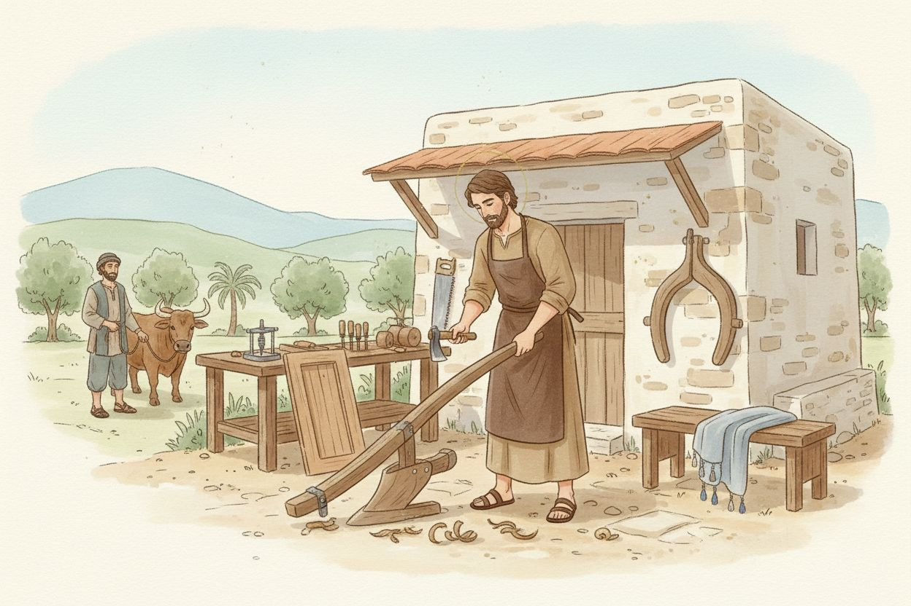
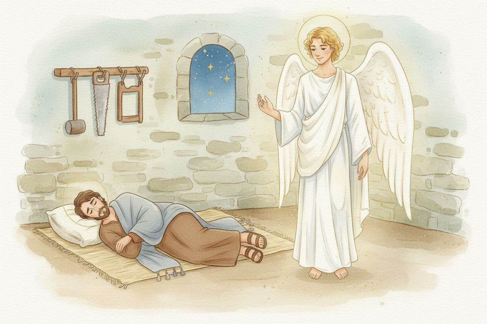
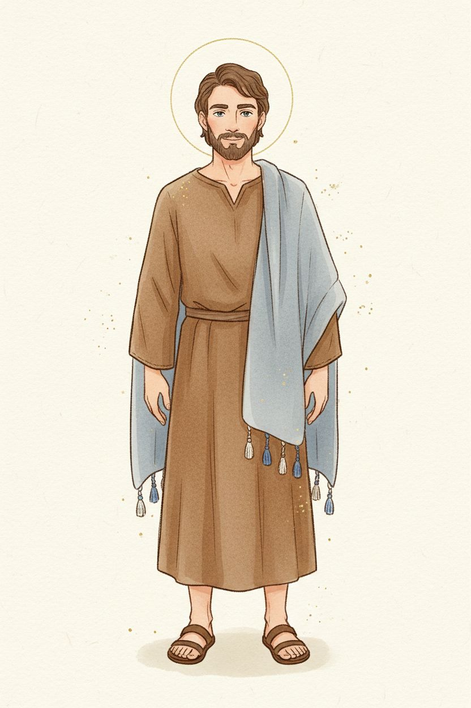
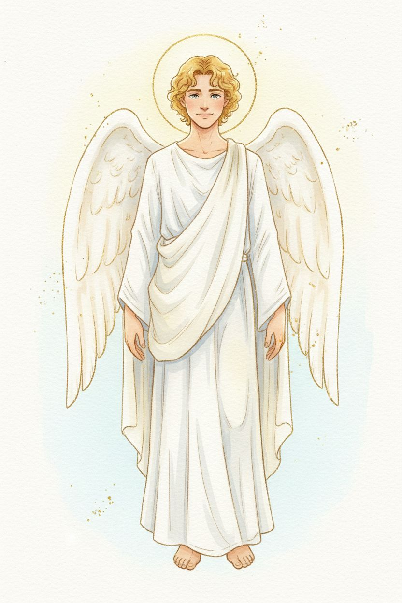

1. V dílně
nenamalováno


2. Anděl v noci
nenamalováno


Postavy v novém stylu




Styl
style: >- Soft watercolour storybook illustration with gold-leaf accents, light and airy: pale translucent washes of sky blue, sand, warm cream and sage green, visible paper texture, soft blooming edges and gentle granulation, hills and distant landscapes painted as layered translucent bands, small touches of shimmering metallic gold for stars, lamplight, speckles and thin gold halos around the holy figures. Figures painted in muted earthy tones with clean fine outlines, long draped garments with soft folds, calm gentle faces with lowered eyes and quiet smiles, reverent and tender like a devotional picture. Everyone wears long tunics and draped mantles in soft earthy colours (undyed wool, sand, ochre, sage, dusty blue, faded brick red); men's mantles have tassels at the corners. Setting: sunlit Galilean and Judean hills, stone houses with flat roofs, olive trees and date palms; night scenes in a lighter version of a deep blue starry sky with gold stars. Bright and gentle overall, never dark or gloomy. mood: light, tender, peaceful, reverent, warm, dreamy palette: - '#8FB3D9' - '#3F5E96' - '#D4AF37' - '#F3EBDD' - '#9AAE8C' - '#8A6A4A' - '#A9B9C6' - '#4A3B30' negative: >- No text, no letters, no words, no watermark. No Christmas trees, no snow, no European or Gothic buildings, no modern Jewish dress (black hats and coats, striped prayer shawls, kippahs), nothing frightening. aspect_ratio: '3:2'